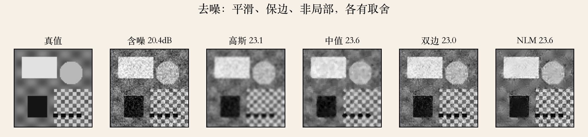
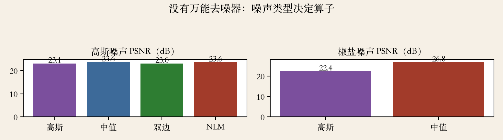
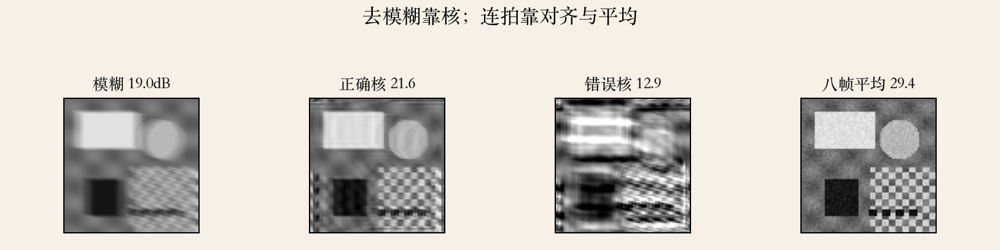

开场 · 去噪与保边
去噪不是把图磨平
- 去噪是图像处理和视觉的经典问题。
- 四十多年里出现了几百种算法。
- 最近的主流基于深度神经网络。
- 目标是去掉噪声，留下边缘和纹理。
依据：原书第 644 页
两条路
单帧：靠先验或学习
多帧：对齐后平均
常和去模糊一起出现
真实噪声 · SIDD
真实噪声要看 SIDD
- NTIRE 2020 / SIDD 是真实去噪基准。
- 真值由 150 张含噪图平均得到。
- 真实噪声带信号相关、去马赛克、压缩。
- 噪声还随 ISO 和温度变化。
依据：原书第 644 页
为什么不用合成噪声
合成噪声好做实验
只在高斯噪声上刷分会失真
先看论文用什么噪声模型
实验一 · 平滑与保边
看图：五种去噪结果并排
- 高斯滤波最平滑，边缘也一起糊。
- 中值滤波更擅长去椒盐。
- 双边和非局部均值保边更好。
- 同一张含噪图，五种结果对比。
依据：本集实验；原书第 644 页

去噪对比：真值/含噪 20.4 dB/高斯 23.1/中值 23.6/双边 23.0/NLM 23.6｜程序生成，未用教材或论文原图
深度去噪 · 残差学习
DnCNN 学的是噪声残差
- DnCNN 是深度去噪的常用基线。
- 网络输入含噪图，输出噪声。
- 原图减掉噪声，得到干净图。
- FFDNet、CBDNet 先估噪声再去噪。
依据：原书第 645 页
学习式的代价
要成对的数据
要算力和训练时间
训练分布之外容易失效
低光 · ISO 与噪声
低光下噪声随亮度变
- 传感器多数时候已经比较干净。
- 低光要拉高 ISO，噪声变大。
- 亮处信噪比高，暗处信噪比低。
- 去噪强度应该随亮度调整。
依据：原书第 645 页
两种噪声
光子噪声服从泊松分布
读出噪声近似高斯
混合后暗部噪声不是常数
低光 · 连拍
连拍：先对齐，再平均
- 低 ISO 快速连拍，多帧合成一张。
- HDR+ 把这套做法推广到低光。
- Night Sight 对齐并合并运动区域。
- 运动测光决定帧数和曝光时间。
依据：原书第 645 页
平均的边界
噪声按根号帧数下降
对齐错就出重影
帧数不是越多越好
去模糊 · 反卷积
去模糊是反卷积，D 等于 1
- 去模糊和超分密切相关。
- 模糊核通常更大，而且未知。
- 下采样因子 D 等于 1。
- 核估错，结果会振铃、出鬼影。
依据：原书第 645 页
为什么难
反卷积是病态问题
核的频域零点放大噪声
需要正则或先验
去模糊 · 多源信息
多源信息：用退化换信息
- 清晰但含噪的图，配模糊但干净的图。
- 拍很多短曝光，再合成。
- 编码光圈同时估深度、减模糊。
- 短曝光少模糊多噪声，长曝光相反。
依据：原书第 645 页
取舍
把两种退化的优点拼起来
比单张硬解更稳
代价是进光量和后期处理
去模糊 · 硬件线索
IMU 和双像素帮估核
- IMU 记录三轴运动，帮定模糊核。
- 双像素辅助失焦图像的去模糊。
- 传感器时间戳要和 IMU 对齐。
- IMU 只测相机运动，拍人还要靠图像。
依据：原书第 645 页
两个硬件线索
IMU：相机怎么抖
双像素：左右视差
比从图里盲猜核可靠
学习式去模糊 · 感知损失
感知损失追求看起来像真图
- 过去十年出现大量学习式去模糊。
- 有的工作故意把纹理加回去。
- 感知损失不追求像素最接近。
- 它可能编出原图没有的纹理。
依据：原书第 646 页
指标要匹配任务
视觉更锐，PSNR 可能更低
常用 VGG 特征，不是像素差
取证和医学影像要谨慎
实验二 · 噪声类型
看图：没有万能去噪器
- 高斯噪声下，中值和 NLM 略好。
- 椒盐噪声下，中值明显赢。
- 边缘相关高，不代表视觉一定好。
- 参数没逐图调优，排名会变。
依据：本集实验

噪声类型决定算子：高斯噪声四法对比；椒盐噪声高斯 22.4 vs 中值 26.8 dB｜程序生成，未用教材或论文原图
实验三 · 对齐与核
看图：核对不对，结果差很多
- 八帧平均把噪声降 63.7%。
- 平均后 PSNR 到 29.4 dB。
- 不对齐直接平均，掉到 20.6 dB。
- Wiener 正确核 21.6，错误核 12.9。
依据：本集实验

去模糊与连拍：模糊 19.0 dB/正确核 21.6/错误核 12.9/八帧 29.4｜程序生成，未用教材或论文原图
工程选型
怎么选：先看噪声类型
- 椒盐噪声先用中值滤波。
- 高斯噪声可选双边、NLM 或 BM3D。
- 低光连拍先对齐，再平均。
- 核不可信时，不要硬做去模糊。
依据：本集实验
交付前检查
PSNR 只是门槛
放大看振铃、重影、纹理
先做基线，再上学习式
收束 · 下一集
这一集的三件事
- 去噪是在降噪和保边之间取舍。
- 连拍靠对齐和平均，单帧靠先验或学习。
- 去模糊靠核，核错会反噬。
- 下一集：去雾和暗通道先验。
依据：原书第 644–646 页
下一集
雾是大气散射造成的对比度下降
无雾图至少一个颜色通道很暗
下一集见